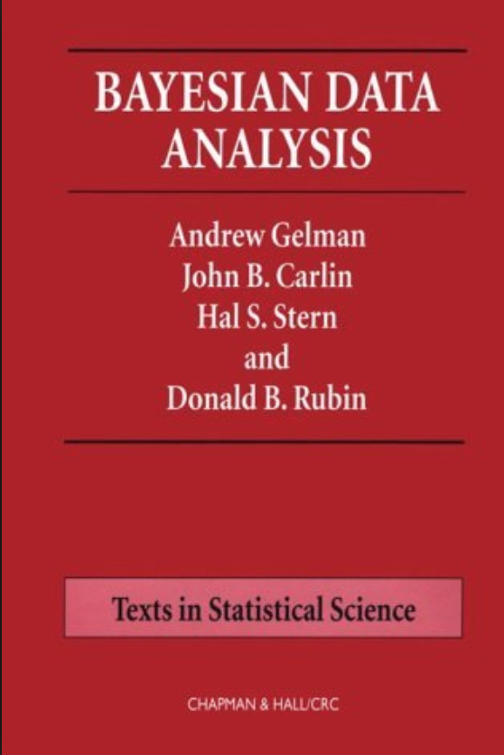

What is Machine Learning?
Data Science Africa Summer School, Addis Ababa, Ethiopia
Introduction
Data Science Africa is a bottom up initiative for capacity building in data science, machine learning and AI on the African continent
Example: Prediction of Malaria Incidence in Uganda
- Work with Ricardo Andrade Pacheco, John Quinn and Martin Mubaganzi (Makerere University, Uganda)
- See AI-DEV Group.
Malaria Prediction in Uganda

(Andrade-Pacheco et al., 2014; Mubangizi et al., 2014)
Tororo District
Malaria Prediction in Nagongera (Sentinel Site)

Mubende District
Malaria Prediction in Uganda

GP School at Makerere

Kabarole District
Early Warning System

Early Warning Systems

Machine Learning
Rise of Machine Learning
- Driven by data and computation
- Fundamentally dependent on models
\[ \text{data} + \text{model} \stackrel{\text{compute}}{\rightarrow} \text{prediction} \]
Data Revolution
Supply Chain
Cromford

Deep Freeze
Deep Freeze
Machine Learning in Supply Chain
- Supply chain: Large Automated Decision Making Network
- Major Challenge:
- We have a mechanistic understanding of supply chain.
- Machine learning is a data driven technology.
For Africa
- Infrastructure dominated by information.
Data Driven
- Machine Learning: Replicate Processes through direct use of data.
- Aim to emulate cognitive processes through the use of data.
- Use data to provide new approaches in control and optimization that should allow for emulation of human motor skills.
Process Emulation
- Key idea: emulate the process as a mathematical function.
- Each function has a set of parameters which control its behaviour.
- Learning is the process of changing these parameters to change the shape of the function
- Choice of which class of mathematical functions we use is a vital component of our model.
Kapchorwa District
Olympic Marathon Data
|

|
Olympic Marathon Data
Polynomial Fits to Olympic Data
What does Machine Learning do?
- Automation scales by codifying processes and automating them.
- Need:
- Interconnected components
- Compatible components
- Early examples:
- cf Colt 45, Ford Model T
Codify Through Mathematical Functions
- How does machine learning work?
- Jumper (jersey/sweater) purchase with logistic regression
\[ \text{odds} = \frac{p(\text{bought})}{p(\text{not bought})} \]
\[ \log \text{odds} = \beta_0 + \beta_1 \text{age} + \beta_2 \text{latitude}.\]
Codify Through Mathematical Functions
- How does machine learning work?
- Jumper (jersey/sweater) purchase with logistic regression
\[ p(\text{bought}) = \sigma\left(\beta_0 + \beta_1 \text{age} + \beta_2 \text{latitude}\right).\]
Codify Through Mathematical Functions
- How does machine learning work?
- Jumper (jersey/sweater) purchase with logistic regression
\[ p(\text{bought}) = \sigma\left(\boldsymbol{\beta}^\top \mathbf{ x}\right).\]
Codify Through Mathematical Functions
- How does machine learning work?
- Jumper (jersey/sweater) purchase with logistic regression
\[ y= f\left(\mathbf{ x}, \boldsymbol{\beta}\right).\]
We call \(f(\cdot)\) the prediction function.
Fit to Data
- Use an objective function
\[E(\boldsymbol{\beta}, \mathbf{Y}, \mathbf{X})\]
- E.g. least squares \[E(\boldsymbol{\beta}, \mathbf{Y}, \mathbf{X}) = \sum_{i=1}^n\left(y_i - f(\mathbf{ x}_i, \boldsymbol{\beta})\right)^2.\]
Two Components
- Prediction function, \(f(\cdot)\)
- Objective function, \(E(\cdot)\)
\[\text{data} + \text{model} \stackrel{\text{compute}}{\rightarrow} \text{prediction}\]
From Model to Decision
|
|
\[\text{data} + \text{model} \stackrel{\text{compute}}{\rightarrow} \text{prediction}\] |
Artificial Intelligence and Data Science
- AI aims to equip computers with human capabilities
- Image understanding
- Computer vision
- Speech recognition
- Natural language understanding
- Machine translation
Supervised Learning for AI
- Dominant approach today:
- Generate large labelled data set from humans.
- Use supervised learning to emulate that data.
- E.g. ImageNet Russakovsky et al. (2015)
- Significant advances due to deep learning
- E.g. Alexa, Amazon Go
Data Science
- Arises from happenstance data.
- Differs from statistics in that the question comes after data collection.
Neural Networks and Prediction Functions
- adaptive non-linear function models inspired by simple neuron models (McCulloch and Pitts, 1943)
- have become popular because of their ability to model data.
- can be composed to form highly complex functions
- start by focussing on one hidden layer
Prediction Function of One Hidden Layer
\[ f(\mathbf{ x}) = \left.\mathbf{ w}^{(2)}\right.^\top \boldsymbol{ \phi}(\mathbf{W}_{1}, \mathbf{ x}) \]
\(f(\cdot)\) is a scalar function with vector inputs,
\(\boldsymbol{ \phi}(\cdot)\) is a vector function with vector inputs.
dimensionality of the vector function is known as the number of hidden units, or the number of neurons.
elements of \(\boldsymbol{ \phi}(\cdot)\) are the activation function of the neural network
elements of \(\mathbf{W}_{1}\) are the parameters of the activation functions.
Relations with Classical Statistics
In statistics activation functions are known as basis functions.
would think of this as a linear model: not linear predictions, linear in the parameters
\(\mathbf{ w}_{1}\) are static parameters.
Adaptive Basis Functions
- In machine learning we optimize \(\mathbf{W}_{1}\) as well as \(\mathbf{W}_{2}\) (which would normally be denoted in statistics by \(\boldsymbol{\beta}\)).
Machine Learning
- observe a system in practice
- emulate its behavior with mathematics.
- Design challenge: where to put mathematical function.
- Where it’s placed leads to different ML domains.
Types of Machine Learning
- Supervised learning
- Unsupervised learning
- Reinforcement learning
Types of Machine Learning
- Supervised learning
Unsupervised learningReinforcement learning
Supervised Learning
Supervised Learning
- Widley deployed
- Particularly in classification.
- Input is e.g. image
- Output is class label (e.g. dog or cat).
Introduction to Classification
Classification
Wake word classification (Global Pulse Project).
Breakthrough in 2012 with ImageNet result of Alex Krizhevsky, Ilya Sutskever and Geoff Hinton
We are given a data set containing ‘inputs’, \(\mathbf{X}\) and ‘targets’, \(\mathbf{ y}\).
Each data point consists of an input vector \(\mathbf{ x}_i\) and a class label, \(y_i\).
For binary classification assume \(y_i\) should be either \(1\) (yes) or \(-1\) (no).
Input vector can be thought of as features.
Discrete Probability
- Algorithms based on prediction function and objective function.
- For regression the codomain of the functions, \(f(\mathbf{X})\) was the real numbers or sometimes real vectors.
- In classification we are given an input vector, \(\mathbf{ x}\), and an associated label, \(y\) which either takes the value \(-1\) or \(1\).
Classification
- Inputs, \(\mathbf{ x}\), mapped to a label, \(y\), through a function \(f(\cdot)\) dependent on parameters, \(\mathbf{ w}\), \[ y= f(\mathbf{ x}; \mathbf{ w}). \]
- \(f(\cdot)\) is known as the prediction function.
Classification Examples
- Classifiying hand written digits from binary images (automatic zip code reading)
- Detecting faces in images (e.g. digital cameras).
- Who a detected face belongs to (e.g. Facebook, DeepFace)
- Classifying type of cancer given gene expression data.
- Categorization of document types (different types of news article on the internet)
Perceptron
Simple classification with the perceptron algorithm.
Logistic Regression and GLMs
- Modelling entire density allows any question to be answered (also missing data).
- Comes at the possible expense of strong assumptions about data generation distribution.
- In regression we model probability of \(y_i |\mathbf{ x}_i\) directly.
- Allows less flexibility in the question, but more flexibility in the model assumptions.
- Can do this not just for regression, but classification.
- Framework is known as generalized linear models.
Log Odds
- model the log-odds with the basis functions.
- odds are defined as the ratio of the probability of a positive outcome, to the probability of a negative outcome.
- Probability is between zero and one, odds are: \[ \frac{\pi}{1-\pi} \]
- Odds are between \(0\) and \(\infty\).
- Logarithm of odds maps them to \(-\infty\) to \(\infty\).
Logit Link Function
- The Logit function, \[g^{-1}(\pi_i) = \log\frac{\pi_i}{1-\pi_i}.\] This function is known as a link function.
- For a standard regression we take, \[f(\mathbf{ x}_i) = \mathbf{ w}^\top \boldsymbol{ \phi}(\mathbf{ x}_i),\]
- For classification we perform a logistic regression. \[\log \frac{\pi_i}{1-\pi_i} = \mathbf{ w}^\top \boldsymbol{ \phi}(\mathbf{ x}_i)\]
Inverse Link Function
We have defined the link function as taking the form \(g^{-1}(\cdot)\) implying that the inverse link function is given by \(g(\cdot)\). Since we have defined, \[ g^{-1}(\pi(\mathbf{ x})) = \mathbf{ w}^\top\boldsymbol{ \phi}(\mathbf{ x}) \] we can write \(\pi\) in terms of the inverse link function, \(g(\cdot)\) as \[ \pi(\mathbf{ x}) = g(\mathbf{ w}^\top\boldsymbol{ \phi}(\mathbf{ x})). \]
Logistic function
- Logistic (or sigmoid) squashes real line to between 0 & 1. Sometimes also called a ‘squashing function’.
Basis Function
Prediction Function
- Can now write \(\pi\) as a function of the input and the parameter vector as, \[\pi(\mathbf{ x},\mathbf{ w}) = \frac{1}{1+ \exp\left(-\mathbf{ w}^\top \boldsymbol{ \phi}(\mathbf{ x})\right)}.\]
- Compute the output of a standard linear basis function composition (\(\mathbf{ w}^\top \boldsymbol{ \phi}(\mathbf{ x})\), as we did for linear regression)
- Apply the inverse link function, \(g(\mathbf{ w}^\top \boldsymbol{ \phi}(\mathbf{ x}))\).
- Use this value in a Bernoulli distribution to form the likelihood.
Bernoulli Reminder
From last time \[P(y_i|\mathbf{ w}, \mathbf{ x}) = \pi_i^{y_i} (1-\pi_i)^{1-y_i}\]
Trick for switching betwen probabilities
Maximum Likelihood
- Conditional independence of data: \[P(\mathbf{ y}|\mathbf{ w}, \mathbf{X}) = \prod_{i=1}^nP(y_i|\mathbf{ w}, \mathbf{ x}_i). \]
Log Likelihood
\[\begin{align*} \log P(\mathbf{ y}|\mathbf{ w}, \mathbf{X}) = & \sum_{i=1}^n\log P(y_i|\mathbf{ w}, \mathbf{ x}_i) \\ = &\sum_{i=1}^ny_i \log \pi_i \\ & + \sum_{i=1}^n(1-y_i)\log (1-\pi_i) \end{align*}\]
Objective Function
- Probability of positive outcome for the \(i\)th data point \[\pi_i = g\left(\mathbf{ w}^\top \boldsymbol{ \phi}(\mathbf{ x}_i)\right),\] where \(g(\cdot)\) is the inverse link function
- Objective function of the form \[\begin{align*} E(\mathbf{ w}) = & - \sum_{i=1}^ny_i \log g\left(\mathbf{ w}^\top \boldsymbol{ \phi}(\mathbf{ x}_i)\right) \\& - \sum_{i=1}^n(1-y_i)\log \left(1-g\left(\mathbf{ w}^\top \boldsymbol{ \phi}(\mathbf{ x}_i)\right)\right). \end{align*}\]
Minimize Objective
- Grdient wrt \(\pi(\mathbf{ x};\mathbf{ w})\) \[\begin{align*} \frac{\text{d}E(\mathbf{ w})}{\text{d}\mathbf{ w}} = & -\sum_{i=1}^n\frac{y_i}{g\left(\mathbf{ w}^\top \boldsymbol{ \phi}(\mathbf{ x})\right)}\frac{\text{d}g(f_i)}{\text{d}f_i} \boldsymbol{ \phi}(\mathbf{ x}_i) \\ & + \sum_{i=1}^n \frac{1-y_i}{1-g\left(\mathbf{ w}^\top \boldsymbol{ \phi}(\mathbf{ x})\right)}\frac{\text{d}g(f_i)}{\text{d}f_i} \boldsymbol{ \phi}(\mathbf{ x}_i) \end{align*}\]
Link Function Gradient
- Also need gradient of inverse link function wrt parameters. \[\begin{align*} g(f_i) &= \frac{1}{1+\exp(-f_i)}\\ &=(1+\exp(-f_i))^{-1} \end{align*}\] and the gradient can be computed as \[\begin{align*} \frac{\text{d}g(f_i)}{\text{d} f_i} & = \exp(-f_i)(1+\exp(-f_i))^{-2}\\ & = \frac{1}{1+\exp(-f_i)} \frac{\exp(-f_i)}{1+\exp(-f_i)} \\ & = g(f_i) (1-g(f_i)) \end{align*}\]
Objective Gradient
\[\begin{align*} \frac{\text{d}E(\mathbf{ w})}{\text{d}\mathbf{ w}} = & -\sum_{i=1}^n y_i\left(1-g\left(\mathbf{ w}^\top \boldsymbol{ \phi}(\mathbf{ x})\right)\right) \boldsymbol{ \phi}(\mathbf{ x}_i) \\ & + \sum_{i=1}^n (1-y_i)\left(g\left(\mathbf{ w}^\top \boldsymbol{ \phi}(\mathbf{ x})\right)\right) \boldsymbol{ \phi}(\mathbf{ x}_i). \end{align*}\]
Optimization of the Function
- Can’t find a stationary point of the objective function analytically.
- Optimization has to proceed by numerical methods.
- Similarly to matrix factorization, for large data stochastic gradient descent (Robbins Munro (Robbins and Monro, 1951) optimization procedure) works well.
data.head()}
Batch Gradient Descent
Stochastic Gradient Descent
Exercise 2
Now construct a stochastic gradient descent algorithm and run it on the data. Is it faster or slower than batch gradient descent? What can you do to improve convergence speed?
Regression
- Classification is discrete output.
- Regression is a continuous output.
Regression Examples
- Predict a real value, \(y_i\) given some inputs \(\mathbf{ x}_i\).
- Predict quality of meat given spectral measurements (Tecator data).
- Radiocarbon dating, the C14 calibration curve: predict age given quantity of C14 isotope.
- Predict quality of different Go or Backgammon moves given expert rated training data.
Supervised Learning Challenges
- choosing which features, \(\mathbf{ x}\), are relevant in the prediction
- defining the appropriate class of function, \(f(\cdot)\).
- selecting the right parameters, \(\mathbf{ w}\).
Feature Selection
- Olympic prediction example only using year to predict pace.
- What else could we use?
- Can use feature selection algorithms
Applications
- rank search results, what adverts to show, newsfeed ranking
- Features: number of likes, image present, friendship relationship
Class of Function, \(f(\cdot)\)
- Mapping characteristic between \(\mathbf{ x}\) and \(y\)?
- smooth (similar inputs lead to similar outputs).
- linear function.
- In forecasting, periodic
Gelman Book
|

|

|
Gelman et al. (2013)
Class of Function: Neural Networks
- ImageNet: convolutional neural network
- Convolutional neural network introduces invariances
Class of Function: Invariances
- An invariance is a transformation of the input
- e.g. a cat remains a cat regardless of location (translation), size (scale) or upside-down (rotation and reflection).
Deep Learning
Deep Learning
These are interpretable models: vital for disease modeling etc.
Modern machine learning methods are less interpretable
Example: face recognition
DeepFace
Outline of the DeepFace architecture. A front-end of a single convolution-pooling-convolution filtering on the rectified input, followed by three locally-connected layers and two fully-connected layers. Color illustrates feature maps produced at each layer. The net includes more than 120 million parameters, where more than 95% come from the local and fully connected.

Source: DeepFace (Taigman et al., 2014)
Deep Learning as Pinball

Encoding Knowledge
- Encode invariance is encoding knowledge
- Unspecified invariances must be learned
- Learning may require a lot more data.
- Less data efficient
Choosing Prediction Function
- Any function e.g. polynomials for olympic data \[ f(x) = w_0 + w_1 x+ w_2 x^2 + w_3 x^3 + w_4 x^4. \]
Parameter Estimation: Objective Functions
- After choosing features and function class we need parameters.
- Estimate \(\mathbf{ w}\) by specifying an objective function.
Labels and Squared Error
- Label comes from supervisor or annotator.
- For regression squared error, \[ E(\mathbf{ w}) = \sum_{i=1}^n(y_i - f(\mathbf{ x}_i))^2 \]
Data Provision
- Given \(n\) inputs, \(\mathbf{ x}_1\), \(\mathbf{ x}_2\), \(\mathbf{ x}_3\), \(\dots\), \(\mathbf{ x}_n\)
- And labels \(y_1\), \(y_2\), \(y_3\), \(\dots\), \(y_n\).
- Sometimes label is cheap e.g. Newsfeed ranking
- Often it is very expensive.
- Manual labour
Annotation
- Human annotators
- E.g. in ImageNet annotated using Amazon’s Mechanical Turk. (AI?)
- Without humans no AI.
- Not real intelligence, emulated
Annotation
- Some tasks easier to annotate than others.
- Sometimes annotation requires an experiment (Tecator data)
Annotation
- Even for easy tasks there will be problems.
- E.g. humans extrapolate the context of an image.
- Quality of ML is very sensitive to data.
- Investing in processes and tools is vital.
Misrepresentation and Bias
- Bias can appear in the model and the data
- Data needs to be carefully collected
- E.g. face detectors trained on Europeans tested in Africa.
Generalization and Overfitting
- How does the model perform on previously unseen data?
Validation and Model Selection
- Selecting model at the validation step
Difficult Trap
- Vital that you avoid test data in training.
- Validation data is different from test data.
Hold Out Validation on Olympic Marathon Data
Overfitting
- Increase number of basis functions we obtain a better ‘fit’ to the data.
- How will the model perform on previously unseen data?
- Let’s consider predicting the future.
Future Prediction: Extrapolation
Extrapolation
- Here we are training beyond where the model has learnt.
- This is known as extrapolation.
- Extrapolation is predicting into the future here, but could be:
- Predicting back to the unseen past (pre 1892)
- Spatial prediction (e.g. Cholera rates outside Manchester given rates inside Manchester).
Interpolation
- Predicting the wining time for 1946 Olympics is interpolation.
- This is because we have times from 1936 and 1948.
- If we want a model for interpolation how can we test it?
- One trick is to sample the validation set from throughout the data set.
Future Prediction: Interpolation
Choice of Validation Set
- The choice of validation set should reflect how you will use the model in practice.
- For extrapolation into the future we tried validating with data from the future.
- For interpolation we chose validation set from data.
- For different validation sets we could get different results.
Exercise 3
For both the linear and quadratic models, fit the model to the data up until 1980 and then compute the error on the held out data (from 1980 onwards). Which model performs better on the validation data?
Exercise 4
Now we are going to build a more sophisticated form of basis function, one that can accept arguments to its inputs (similar to those we used in this lab). Here we will start with a polynomial basis.
def polynomial(x, degree, loc, scale):
degrees =np.arange(degree+1)
return ((x-loc)/scale)**degreesThe basis as we’ve defined it has three arguments as well as the input. The degree of the polynomial, the scale of the polynomial and the offset. These arguments need to be passed to the basis functions whenever they are called. Modify your code to pass these additional arguments to the python function for creating the basis. Do this for each of your functions predict, fit and objective. You will find *args (or **kwargs) useful.
Write code that tries to fit different models to the data with polynomial basis. Use a maximum degree for your basis from 0 to 17. For each polynomial store the hold out validation error and the training error. When you have finished the computation plot the hold out error for your models and the training error for your p. When computing your polynomial basis use offset=1956. and scale=120. to ensure that the data is mapped (roughly) to the -1, 1 range.
Which polynomial has the minimum training error? Which polynomial has the minimum validation error?
Bias Variance Decomposition
Generalisation error \[ \mathbb{E}\left[ \left(y- f^*(\mathbf{ y})\right)^2 \right]. \] Decompose as \[ \mathbb{E}\left[ \left(y- f(\mathbf{ y})\right)^2 \right] = \text{bias}\left[f^*(\mathbf{ y})\right]^2 + \text{variance}\left[f^*(\mathbf{ y})\right] +\sigma^2, \]
Bias
Given by \[ \text{bias}\left[f^*(\mathbf{ y})\right] = \mathbb{E}\left[f^*(\mathbf{ y})\right] * f(\mathbf{ y}) \]
Error due to bias comes from a model that’s too simple.
Variance
Given by \[ \text{variance}\left[f^*(\mathbf{ y})\right] = \mathbb{E}\left[\left(f^*(\mathbf{ y}) - \mathbb{E}\left[f^*(\mathbf{ y})\right]\right)^2\right]. \]
Slight variations in the training set cause changes in the prediction. Error due to variance is error in the model due to an overly complex model.
.


Overfitting
Alex Ihler on Polynomials and Overfitting
Olympic Data with Bayesian Polynomials
Hold Out Validation
5-fold Cross Validation
Thanks!
twitter: @lawrennd
podcast: The Talking Machines
Guardian article on How African can benefit from the data revolution
Guardian article on Data Science Africa
References
Andrade-Pacheco, R., Mubangizi, M., Quinn, J., Lawrence, N.D., 2014. Consistent mapping of government malaria records across a changing territory delimitation. Malaria Journal 13. https://doi.org/10.1186/1475-2875-13-S1-P5
Gelman, A., Carlin, J.B., Stern, H.S., Rubin, D.B., 2013. Bayesian data analysis, 3rd ed. Chapman; Hall.
McCulloch, W.S., Pitts, W., 1943. A logical calculus of the ideas immanent in nervous activity. Bulletin of Mathematical Biophysics 5, 115–133.
Mubangizi, M., Andrade-Pacheco, R., Smith, M.T., Quinn, J., Lawrence, N.D., 2014. Malaria surveillance with multiple data sources using Gaussian process models, in: 1st International Conference on the Use of Mobile ICT in Africa.
Robbins, H., Monro, S., 1951. A stochastic approximation method. Annals of Mathematical Statistics 22, 400–407.
Russakovsky, O., Deng, J., Su, H., Krause, J., Satheesh, S., Ma, S., Huang, Z., Karpathy, A., Khosla, A., Bernstein, M., Berg, A.C., Fei-Fei, L., 2015. ImageNet Large Scale Visual Recognition Challenge. International Journal of Computer Vision (IJCV) 115, 211–252. https://doi.org/10.1007/s11263-015-0816-y
Taigman, Y., Yang, M., Ranzato, M., Wolf, L., 2014. DeepFace: Closing the gap to human-level performance in face verification, in: Proceedings of the IEEE Computer Society Conference on Computer Vision and Pattern Recognition. https://doi.org/10.1109/CVPR.2014.220